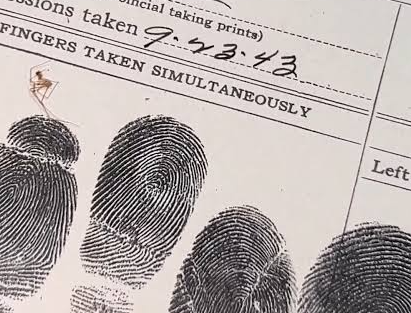

Teardrops on Pages
September 2026 (Soft Launch) / December 2026 (Published)
A long lost diary from a missing expedition was found. Explore the daily life of the Journalist as she navigates the treacherous foggy mountains of Indonesia. (Audio Recording Available)

The Witch Tree
December 2026
A short story about a 17th century knight who discovers a small Swedish village and learns of their local customs and traditions. (Audio Recording Available)

Cold Case
February 2027
A police report from 1945 about a disturbing missing person's case. (Audio Recording Available)

Teardrops on Paintings
March 2027
A collection of 14th century paintings stored in the deep vaults of Belltower Archives. Follow the story using visual cues and information. (Images Only)

Sunken Greed
April 2027
A recovered captain's log from a lost vessel that went missing in 2007. (Text Only)

The Confession
May 2027
A mother tries to protect her daughter from horrors that torment her after they settle into a small mining outpost. (Audio Recording Available)

Teardrops on Photographs
June 2027
The finale of the Belltower Saga. Explore the story through a series of polaroid photographs recovered from an expedition that went wrong. Everything will be revealed. All mysteries will be answered. (Images Only)